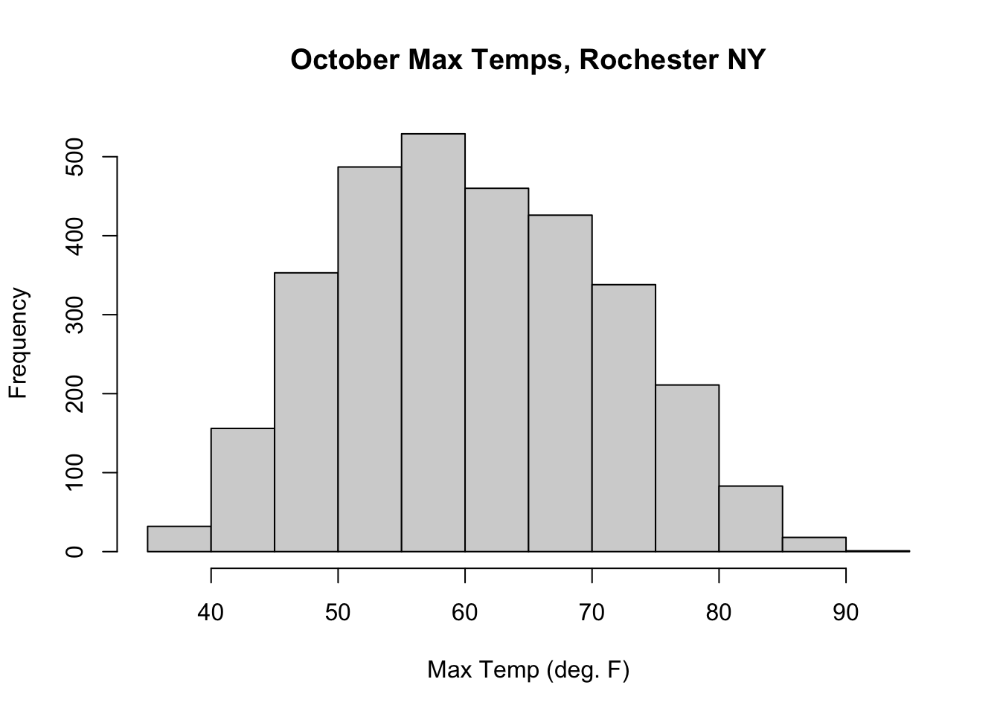
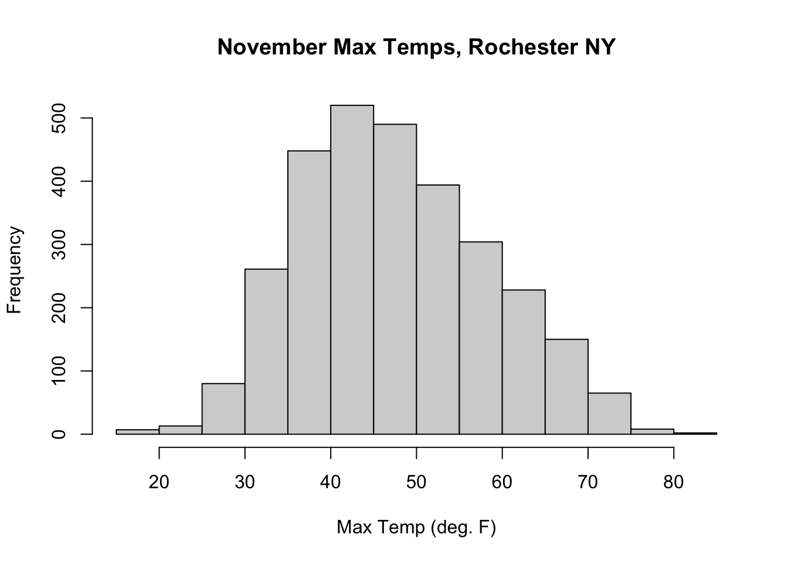
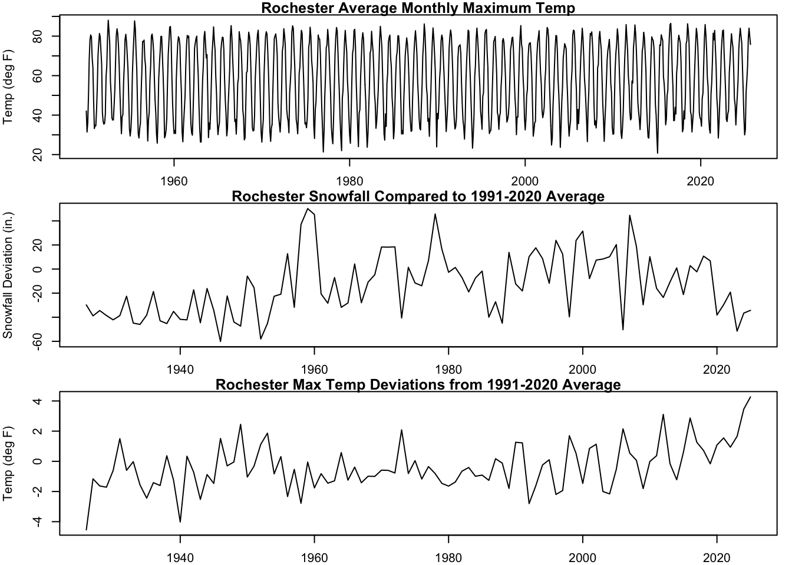

The following objects are masked from 'package:stats':
filter, lag
The following objects are masked from 'package:base':
intersect, setdiff, setequal, union
library(lubridate)
Attaching package: 'lubridate'
The following objects are masked from 'package:base':
date, intersect, setdiff, union
library(imputeTS)
Registered S3 method overwritten by 'quantmod':
method from
as.zoo.data.frame zoo
library(TSA)
Registered S3 methods overwritten by 'TSA':
method from
fitted.Arima forecast
plot.Arima forecast
Attaching package: 'TSA'
The following objects are masked from 'package:stats':
acf, arima
The following object is masked from 'package:utils':
tar
1. Introduction
In this project, we will explore the trends exhibited in snowfall and maximum temperature data from Rochester, New York, from January of 1926 until October, 2025. The full dataset contains columns for the daily maximum and minimum temperatures, the amount of precipitation, the amount of snowfall, and the total depth of snow measured on the ground.
Date TAVG..Degrees.Fahrenheit. TMAX..Degrees.Fahrenheit.
1 1926-01-02 NA 33
2 1926-01-03 NA 35
3 1926-01-04 NA 42
4 1926-01-05 NA 49
5 1926-01-06 NA 38
6 1926-01-07 NA 29
TMIN..Degrees.Fahrenheit. PRCP..Inches. SNOW..Inches. SNWD..Inches.
1 28 0.02 0.3 3
2 32 0.00 0.0 2
3 35 0.14 0.0 0
4 38 0.00 0.0 0
5 29 0.00 0.0 0
6 16 0.04 0.4 0
We will convert the columns TMAX..Degrees.Fahrenheit. and SNOW..Inches. to separate objects and identify any missing values.
#Create snowfall set, then rename colRochester.snowfall <- Rochester %>%select("Date", "SNOW..Inches.")Rochester.snowfall <- Rochester %>%select(Date, SNOW..Inches.) %>%rename(snowfall = SNOW..Inches.)#Create max temp set, rename colRochester.Tmax <- Rochester %>%select("Date", "TMAX..Degrees.Fahrenheit.")Rochester.Tmax <- Rochester %>%select(Date, TMAX..Degrees.Fahrenheit.) %>%rename(tmax = TMAX..Degrees.Fahrenheit.)#Make Date col a true datetime objectRochester.snowfall$Date <-as.Date(Rochester.snowfall$Date, format ="%Y-%m-%d")Rochester.Tmax$Date <-as.Date(Rochester.Tmax$Date, format ="%Y-%m-%d")#Make Year, Month, Day Columns: Should've done before splittingRochester.snowfall$Month <-month(Rochester.snowfall$Date)Rochester.snowfall$Year <-year(Rochester.snowfall$Date)Rochester.snowfall$Day <-day(Rochester.snowfall$Date)Rochester.Tmax$Month <-month(Rochester.Tmax$Date)Rochester.Tmax$Year <-year(Rochester.Tmax$Date)Rochester.Tmax$Day <-day(Rochester.Tmax$Date)#Determine dates (rows) with snowfall entered as NA(snow.na <- Rochester.snowfall[is.na(Rochester.snowfall$snowfall), ])
Date snowfall Month Year Day
55 1926-02-25 NA 2 1926 25
1377 1929-10-09 NA 10 1929 9
1378 1929-10-10 NA 10 1929 10
1379 1929-10-11 NA 10 1929 11
1380 1929-10-12 NA 10 1929 12
1381 1929-10-13 NA 10 1929 13
1382 1929-10-14 NA 10 1929 14
1383 1929-10-15 NA 10 1929 15
1384 1929-10-16 NA 10 1929 16
2389 1932-07-17 NA 7 1932 17
5430 1940-11-13 NA 11 1940 13
5431 1940-11-14 NA 11 1940 14
5432 1940-11-15 NA 11 1940 15
5433 1940-11-16 NA 11 1940 16
5434 1940-11-17 NA 11 1940 17
5435 1940-11-18 NA 11 1940 18
5436 1940-11-19 NA 11 1940 19
5437 1940-11-20 NA 11 1940 20
5438 1940-11-21 NA 11 1940 21
5439 1940-11-22 NA 11 1940 22
5440 1940-11-23 NA 11 1940 23
5441 1940-11-24 NA 11 1940 24
5442 1940-11-25 NA 11 1940 25
5443 1940-11-26 NA 11 1940 26
5444 1940-11-27 NA 11 1940 27
5445 1940-11-28 NA 11 1940 28
5446 1940-11-29 NA 11 1940 29
5447 1940-11-30 NA 11 1940 30
7987 1947-11-14 NA 11 1947 14
25750 1996-07-02 NA 7 1996 2
25753 1996-07-05 NA 7 1996 5
25754 1996-07-06 NA 7 1996 6
25779 1996-07-31 NA 7 1996 31
#Determine dates (rows) with max temp entered as NA(Tmax.na <- Rochester.Tmax[is.na(Rochester.Tmax$tmax),])
Date tmax Month Year Day
2389 1932-07-17 NA 7 1932 17
6259 1943-02-20 NA 2 1943 20
Unfortunately, we are presented with an immediate issue in the snowfall data: eight consecutive missing values in October, 1929 and almost twenty consecutive missing values in November, 1940. If these were from the warmer months of March-August, we could impute zeros with no hesitation; however, Rochester weather can be unruly in autumn. There are two ways to fix the largest gaps in the data, the first of which is to simply drop the portion of the observed values prior to 1941. An alternative, since standard techniques (e.g. interpolation, sample mean, last-observation-carry-forward) are generally insufficient for such large gaps, is to randomly sample from the same month in adjacent years.
To get a sense of the daily snowfall amounts and maximum temperatures in October and November over the years, we can plot histograms.
hist(Rochester.Tmax[grepl("-10-", Rochester.Tmax$Date), ]$tmax, main ="October Max Temps, Rochester NY",xlab ="Max Temp (deg. F)")

hist(Rochester.Tmax[grepl("-11-", Rochester.Tmax$Date), ]$tmax, main ="November Max Temps, Rochester NY",xlab ="Max Temp (deg. F)")

From the histograms for snowfall in October and November, it would not be unreasonable to simply enter zeros for all missing days, but we will take the extra step to sample from the same month in adjacent years.
2. Data Cleaning and Organization
The largest gaps in the snowfall data occur in October, 1929 and November, 1940. These values will be imputed by sampling with replacement from the same month in adjacent years.
#Identify NA rows from October, 1929oct29_idx <-which( Rochester.snowfall$Month ==10& Rochester.snowfall$Year ==1929&is.na(Rochester.snowfall$snowfall))#Identify NA rows from November, 1940nov40_idx <-which( Rochester.snowfall$Month ==11& Rochester.snowfall$Year ==1940&is.na(Rochester.snowfall$snowfall))#Gather same months from adjacent years (Oct 1927/30, Nov 1939/41)adj_oct <- Rochester.snowfall %>%filter(format(Date, "%Y-%m") %in%c("1927-10", "1930-10")) %>%filter(!is.na(snowfall)) %>%pull(snowfall) adjacent_nov <- Rochester.snowfall %>%filter(format(Date, "%Y-%m") %in%c("1939-11", "1941-11")) %>%filter(!is.na(snowfall)) %>%pull(snowfall)#Set seed to reproduce; sample with replacement from the adjacent yr numeric vectorsset.seed(42) Rochester.snowfall$snowfall[oct29_idx] <-sample( adj_oct,size =length(oct29_idx),replace =TRUE)Rochester.snowfall$snowfall[nov40_idx] <-sample( adjacent_nov,size =length(nov40_idx),replace =TRUE)#Check for NA again; should be greatly reduced(snow.na.1<- Rochester.snowfall[is.na(Rochester.snowfall$snowfall), ])
Date snowfall Month Year Day
55 1926-02-25 NA 2 1926 25
2389 1932-07-17 NA 7 1932 17
7987 1947-11-14 NA 11 1947 14
25750 1996-07-02 NA 7 1996 2
25753 1996-07-05 NA 7 1996 5
25754 1996-07-06 NA 7 1996 6
25779 1996-07-31 NA 7 1996 31
Now the missing values from the month of July in 1932 and 1996 will be imputed as 0.
#Identify NA rows from July, 1996jul96_idx <-which( Rochester.snowfall$Month ==7& Rochester.snowfall$Year ==1996&is.na(Rochester.snowfall$snowfall))jul32_idx <-which( Rochester.snowfall$Month ==7& Rochester.snowfall$Year ==1932&is.na(Rochester.snowfall$snowfall))#ReplaceRochester.snowfall$snowfall[jul96_idx] <-0Rochester.snowfall$snowfall[jul32_idx] <-0#Another check of remaining NA rows(snow.na.1<- Rochester.snowfall[is.na(Rochester.snowfall$snowfall), ])
Date snowfall Month Year Day
55 1926-02-25 NA 2 1926 25
7987 1947-11-14 NA 11 1947 14
The remaining two missing data points will be filled according to LOCF (last-observed-carry-forward) method.
[1] Date snowfall Month Year Day
<0 rows> (or 0-length row.names)
The snowfall data has been successfully cleaned. Now we will look to address the missing maximum temperature entries. In order to get a sense of what imputation method will work best, we need to zoom in on the days near July 17, 1932, and February 20, 1943.
The best available option is to use a spline to interpolate and impute. This is automated using the imputeTS package. We will impute and look locally at the values to make sure everything is reasonably done before imputing in the actual series.
These are reasonable visually, though this is a nebulous assessment at best. We will impute using this method.
#Replace NA temp values via spline interpolationRochester.Tmax$tmax <-na_interpolation(Rochester.Tmax$tmax, option ="spline")(Tmax.na1 <- Rochester.Tmax[is.na(Rochester.Tmax$tmax),])
[1] Date tmax Month Year Day
<0 rows> (or 0-length row.names)
Now we will compile our time series to contain the following information (noting we do not have January 1st, 1926):
Average monthly maximum temperature
Total annual snowfall deviation: compare total annual snowfall for each year to the yearly average across 1991-2020. In particular, take \(S_i-R_S\) where \(T_i\) is the annual total snowfall for year \(i\) and \(R_S\) is the reference snowfall. This quantity will be non-negative when at least as much snow fell in year \(i\) compared to the reference amount, and negative otherwise.
Annual maximum temperature deviation: compare the average maximum temperature over a given year to the average maximum temperature across 1991-2020. In particular, take \(T_i-R_T\) where \(T_i\) is the average maximum temperature for year \(i\) and \(R_T\) is the reference temperature. This quantity will be nonnegative when the average maximum temperature in a given year is lower than the reference.
Finally, our time series objects can be created. The average monthly maximum temperature series will be limited to January, 1950 and beyond.
par(mfrow=c(3,1), mar =c(2,4,1,1))#Restrict max temp average by month to Jan 1950 - Sep 2025max_temps <-ts(monthly_tmax$mean_tmax, start =c(1926, 1), frequency =12)max_temps <-window(max_temps, start =c(1950, 1), end =c(2025, 9))snowfall_devs <-ts(annual_snow_deviations$tot_snow, start =1926, frequency =1)max_tempdevs <-ts(annual_tmax_deviations$tmax_avg, start =1926, frequency =1)ts.plot(max_temps, ylab ="Temp (deg F)", main ="Rochester Average Monthly Maximum Temp")ts.plot(window(snowfall_devs, start =1926), ylab ="Snowfall Deviation (in.)", main ="Rochester Snowfall Compared to 1991-2020 Average")ts.plot(window(max_tempdevs, start =1926), ylab ="Temp (deg F)", main ="Rochester Max Temp Deviations from 1991-2020 Average")

By construction, the latter two time series are more similar in nature to each other than to the first. The seasonal nature of the maximum temperature averaged over each month provides us with a different sort of forecasting opportunity, which we explore in the next section.
3. Analysis of Average Monthly Maximum Temperature
3.1 Preliminary Analysis
The time series max_temps exhibits regular seasonal behavior with stable amplitude and limited discernible trend. We will examine these claims more closely, beginning with two different methods of trend estimation.
One nonparametric method we may use to estimate trend to avoid assuming any functional form is Season-Trend LOESS, a form of detrending via local regression.
We will split the series into a training portion from January, 1970 until December, 2024, and forecast portion from January, 2025 until September, 2025. Then, we will generate a line of best fit.
motemps.train <-window(max_temps, start =c(1970, 1), end =c(2024,12))motempts.fore <-window(max_temps, start =c(2025,1), end =c(2025, 9))n_ttrain <-length(motemps.train)n_tfore <-length(motempts.fore)